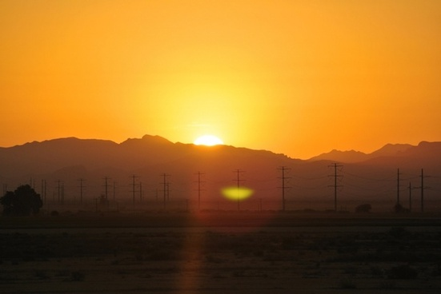

sunrise
Introduction.
Sunrise is one of the most beautiful scenes of Nature. It gives new life to all creatures and plants. Plainly speaking it means the end of dark night and the beginning of a fresh day.
What one should do?
One should get up early in the morning to enjoy the sight of sunrise. Not only this, one must climb a hill or some other high point. Before the sun comes out, the sky turns purple all round. The birds start chirruping and flowers emit smell. Soon the sun comes out behind the hills. At first it has a curved shape, but soon it forms a complete circle emitting sunshine all around. As the sun goes up, the circle becomes smaller but compact and one can hardly look at it with naked eyes.
Its curative value.
Watching the sunrise and absorbing its magnetic waves gives a strange thrill of vitality and power. New ideas spring up. Poets got whole philosophy of life by watching the sunrise and sunset daily.